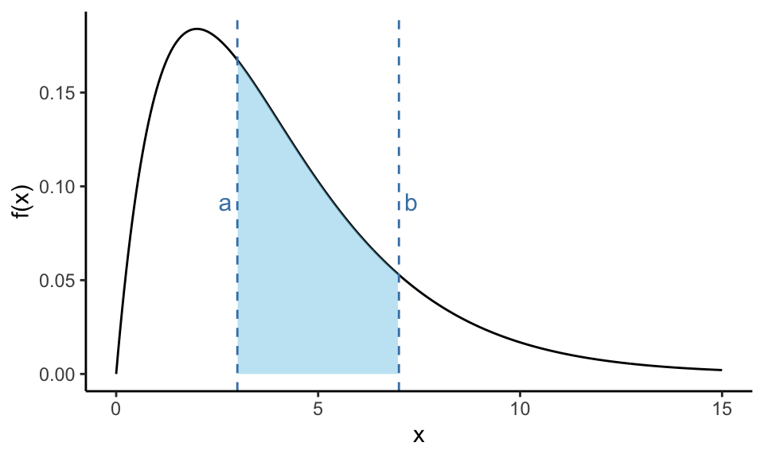
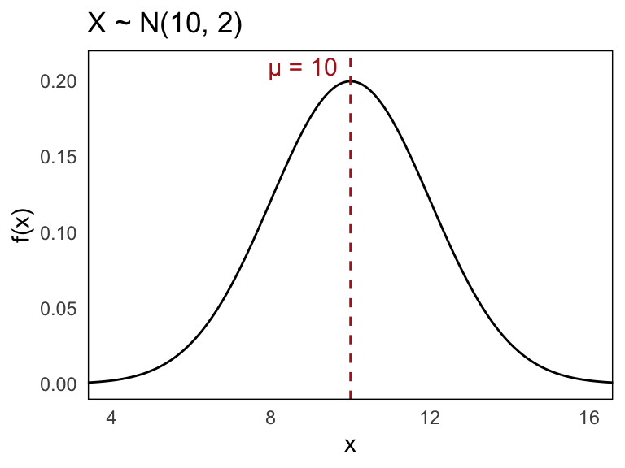

14 Continuous Probability Distributions
Until now, we have mainly worked with discrete random variables, meaning variables that can only take on a finite or countably infinite number of possible values. For instance, the number of heads when tossing coins or the number of defective items in a sample are all discrete.
However, not all random phenomena can be described in this way. A continuous random variable is a variable that can take on any value within an interval on the real number line. Rather than jumping between isolated values, a continuous variable can assume an infinite continuum of possible outcomes.
Because a continuous random variable can take any value within an interval, it is practically impossible to guess the exact value that a randomly selected observation will have. In fact, the probability that the variable exactly equals any specific value is zero. Consequently, for continuous random variables, we do not measure probabilities at single points. Instead, we consider the probability that the variable falls within a given interval.
To handle continuous random variables, we develop continuous analogues of the probability mass functions used for discrete variables. These continuous probability distributions are described using probability density functions, which allow us to calculate the probability that the variable lies within a specified range.
To summarize visually:
| Feature | Discrete Random Variable | Continuous Random Variable |
|---|---|---|
| Possible values | Finite or countable infinite set (e.g., 0, 1, 2, …) | Any real number within an interval (e.g., [0, 1]) |
| Probability at a single point | Positive (e.g., \(P(X = 2) > 0\)) | Always zero (\(P(X = 2) = 0\)) |
| Probability distribution type | Probability mass function (PMF) | Probability density function (PDF) |
| How probabilities are calculated | Sum over points (\(\sum\)) | Integrate over intervals (\(\int\)) |
In discrete settings, probabilities are assigned to individual points. For continuous random variables, we instead measure the “area under the curve” of the density function across an interval.
As we move forward, we will develop the tools needed to work with continuous distributions, starting with probability density functions and moving toward important continuous models such as the uniform and normal distributions.
14.1 Probability Density Function (PDF)
A continuous random variable can take on all possible values within some interval on the real number line. The interval may be bounded or extend to infinity in one or both directions.
The probability distribution of a continuous random variable \(X\) is described by a so-called probability density function \(f(x)\). The density function represents how the values of \(X\) are distributed across the real line.
A typical shape of a probability density function might look like the following:
In contrast to discrete random variables, continuous variables do not assign positive probability to specific points. Instead, the probability that \(X\) falls within a particular interval \([a, b]\) is given by the area under the curve of the density function between \(a\) and \(b\):
\[ P(a \leq X \leq b) = \text{area under } f(x) \text{ from } a \text{ to } b \]
The properties that every valid probability density function must satisfy are: - \(f(x) \geq 0\) for all \(x\) (the function must be non-negative everywhere) - The total area under \(f(x)\) over the entire real line equals 1:
\[ \int_{-\infty}^{\infty} f(x) , dx = 1 \]
This ensures that the random variable must take on some value in the real numbers with total probability one.
We can also visually highlight the probability over a specific interval by shading the area between two points \(a\) and \(b\):

In this plot, the shaded area between \(a = 3\) and \(b = 7\) represents \(P(3 \leq X \leq 7)\); the probability that the random variable falls within this interval.
This concept, relating probabilities to areas under a curve, is a fundamental idea when working with continuous random variables, and it distinguishes them clearly from the discrete case where we sum probabilities at isolated points.
When working with continuous random variables, we are always interested in the probability that a value falls within an interval, never at a single point. This is because the area under the curve at a single value is zero, which means:
\[ P(X = a) = 0 \]
Whether we specify the interval as open, closed, or half-open does not affect the probability. For example, the following expressions are all equivalent:
\[ P(a \leq X \leq b) = P(a \leq X < b) = P(a < X \leq b) = P(a < X < b) \]
They all describe the same shaded region under the curve between \(a\) and \(b\).
Formally, the probability that \(X\) falls within an interval \([a, b]\) is given by integrating the probability density function:
\[ P(a \leq X \leq b) = \int_a^b f(x) \, dx \]
However, in this course, we do not require formal calculations using integrals.
We can work with the cumulative distribution function (CDF), which is defined as:
\[ F(x) = P(X \leq x) \]
This function gives the total probability accumulated up to the value \(x\), that is, the area under the density curve from the lower bound of the distribution up to \(x\).
Using the CDF, we can express interval probabilities as the difference of cumulative values:
\[ P(a \leq X \leq b) = P(X \leq b) - P(X \leq a) = F(b) - F(a) \]
This relationship is especially useful when we don’t have access to the density function itself but can look up or compute values of the cumulative distribution. It also reinforces the idea that probability for continuous variables is tied to the area between two points, not the height at a point.
14.2 Expectation and Variance for Continuous Variables
Just as we did with discrete random variables, we can define the expected value and variance for continuous random variables. These two quantities serve as important measures of central tendency and spread, respectively.
The expected value of a continuous random variable \(X\) with density function \(f(x)\) is given by:
\[ \mathbb{E}(X) = \mu_X = \int_{-\infty}^{\infty} x f(x) \, dx \]
This can be interpreted as a kind of weighted average, where the values of \(x\) are weighted by their relative likelihood — in this case, the density function \(f(x)\).
The variance is defined as:
\[ \mathbb{V}(X) = \sigma_X^2 = \int_{-\infty}^{\infty} (x - \mu)^2 f(x) \, dx \]
Just like in the discrete case, this measures how spread out the values of \(X\) are around the mean \(\mu\).
Intuitively, the expected value can be thought of as the balance point of the distribution, the point at which the density function would balance perfectly if it were a physical object. The variance, as before, describes how tightly or widely the values of \(X\) tend to cluster around this center.
14.3 The Normal Distribution
Among all continuous probability distributions, none is more important or more widely used than the normal distribution. This may seem strange, since very few real-world quantities are exactly normally distributed. Nevertheless, the normal distribution plays a central role in probability theory and statistics, especially as a powerful approximation tool.
Mathematically, a random variable \(X\) is said to follow a normal distribution if its probability density function is given by:
\[ f(x) = \frac{1}{\sigma \sqrt{2\pi}} \, e^{- \frac{1}{2} \left( \frac{x - \mu}{\sigma} \right)^2}, \quad \text{for } -\infty < x < \infty \]
We denote this by writing:
\[ X \sim \mathcal{N}(\mu, \sigma) \]
Here, \(\mu\) is the mean of the distribution, and \(\sigma^2\) is the variance (with \(\sigma\) being the standard deviation).
This density function has a characteristic bell shape: it is symmetric about the mean \(\mu\), and the spread of the curve is determined by \(\sigma\). The larger the value of \(\sigma\), the more spread out the distribution becomes.
Despite its somewhat complicated appearance, the normal distribution is incredibly useful because many phenomena in practice, especially sums and averages of random variables, tend to follow a distribution that closely resembles the normal. This fact is supported by the central limit theorem, which guarantees that under mild conditions, the sum of a large number of independent random variables tends toward a normal distribution, regardless of the original distributions. We will return to this in more details later.
Moreover, the probabilities associated with the normal distribution have already been computed and tabulated. These tables allow us to quickly look up values without performing integrals manually, making the normal distribution not only powerful in theory but also very practical in application.
It is this combination of mathematical elegance, approximation power, and computational convenience that explains the normal distribution’s central role in both theoretical and applied statistics.
Let us now look at a concrete example. Suppose \(X\) is a normally distributed random variable with mean \(\mu = 10\) and standard deviation \(\sigma = 2\):
\[ X \sim \mathcal{N}(10, 2) \]
The density function of \(X\) is bell-shaped and symmetric around the mean, with most of its probability mass concentrated within a few standard deviations from the center.
Below is the probability density function for this distribution:

In practice, there are a few key characteristics of the normal distribution that are particularly important to understand.
First, the shape of the normal distribution is completely determined by two parameters: the mean \(\mu\) and the standard deviation \(\sigma\). These control the center and the spread of the distribution, respectively.
The sample space of a normal distribution is the entire real number line, meaning that the variable can take on any real value, both positive and negative.
Graphically, the density function of a normal distribution always has the same bell-shaped curve, regardless of the specific values of \(\mu\) and \(\sigma\). The mean \(\mu\) determines the central location of the curve, while the standard deviation \(\sigma\) determines how wide or narrow the curve appears.
A key feature of the normal distribution is that it is symmetric around the mean \(\mu\). This symmetry implies that probabilities on either side of the mean are equal for equally sized intervals. In addition, as \(x \to \pm\infty\), the density function \(f(x)\) approaches zero, meaning that extremely large or small values are increasingly unlikely, but not impossible.
The shape of a normal distribution is fully determined by its mean \(\mu\) and standard deviation \(\sigma\). Changing either of these parameters modifies the appearance of the distribution in predictable ways. This is shown in Figure 14.1.
In (a), we compare two normal distributions with different means but the same standard deviation. This results in curves with identical shapes, but centered at different locations. Shifting \(\mu\) translates the curve horizontally without altering its height or spread.
In (b), we hold the mean constant and vary the standard deviation. This causes the curve to either compress or stretch. A smaller \(\sigma\) yields a sharper, narrower peak, while a larger \(\sigma\) produces a flatter, wider distribution.
But first, we will learn how to calculate probabilities using normal distribution tables.